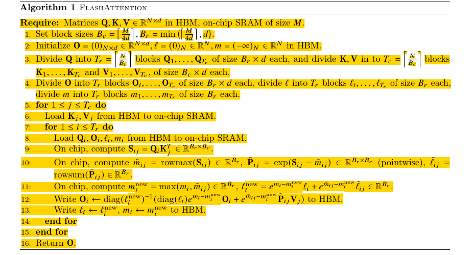

本文精读 Dao 等人的 FlashAttention: Fast and Memory-Efficient Exact Attention with IO-Awareness（arXiv v2，2022），重点解释注意力矩阵为何造成显存读写、分块后如何保持 Softmax 的完整归一化、反向传播为何重算，以及论文的复杂度与实验分别支持什么结论。读者只需了解矩阵乘法和 Transformer 中 token 的基本含义。文中图表与数字均来自论文原文，没有重新运行 GPU 基准测试。
主要工作
FlashAttention 是一种 IO 感知的精确注意力算法：它仍计算给定掩码及缩放规则下的 ，但把查询、键和值分块，在 GPU 片上存储中生成并消费局部注意力分数，不把完整的 分数矩阵与概率矩阵写入高带宽显存（HBM）。片上存储容量小，无法容纳所有键时，算法以每行的最大值、指数和及部分输出为状态，逐块完成同一个 Softmax。训练时再根据输入和这些状态重算局部概率，避免为反向传播保存二次方大小的矩阵。论文，§1、§3.1、算法 1、附录 B
论文给出前向算法的片外访问量 ： 是序列长度， 是单头维度， 是以元素数计的片上存储容量；作为对照，文中的标准实现需要 次访问。这改变的是数据搬运量与中间结果占用，稠密精确注意力的主要矩阵乘法仍要处理 对查询和键。论文在特定 A100、模型及基线条件下报告 BERT-large 端到端训练时间由 20.0 分钟降到 17.4 分钟，GPT-2 medium 由 Hugging Face 基线的 21.0 天降到 6.9 天。两个结果属于不同实验，不是一个通用加速系数。论文，§3.1–3.2、表 1–2
研究背景
自注意力把长度为 的 token 表示 分别投影为查询 、键 和值 。对一个注意力头，三者可记为 矩阵；它们的第 行都对应第 个输入位置，但承担不同的计算角色。第 个查询 与每个键 做点积，得到位置 对位置 的分数；沿 归一化之后，使用同一位置的值 作加权求和。因此，键和值按位置配对，而输出按查询位置排列。点积是可学习投影产生的打分方式，其有用的匹配关系由训练决定。论文，§2.2
令 ，其中 是注意力缩放因子；可见位置的 保留，掩码排除的位置取 。于是第 行的输出为：
矩阵形式为 、、，Softmax 按行计算。论文算法 1 为突出分块，把 暂时省入分数定义；附录 B 的完整反向算法显式写出缩放、掩码和 Dropout。 的列 与 的行 对齐，保证某个键得到的权重用于同位置的值。论文，§2.2、算法 1、附录 B.4
GPU 的高带宽显存（HBM）容量大，片上静态随机存取存储器（SRAM，包括共享内存等用于局部计算的片上资源）容量小、带宽高。论文以 A100 为例：HBM 容量为 40–80 GB，带宽约 1.5–2.0 TB/s；每个流多处理器有 192 KB 片上 SRAM，片上带宽估计约 19 TB/s。这里的 IO 指 HBM 与片上存储之间的数据读写。判断运算是否受显存带宽限制，还要看算术强度：每读写一个字节所完成的运算量。如果搬运数据期间不足以让计算单元持续工作，运行时间就主要由数据搬运决定。论文，§2.1、图 1
标准注意力中的两次矩阵乘法可以具有较高的算术强度；夹在两次乘法之间的 Softmax 则要读取 的分数矩阵 ，对每行求指数、归约并归一化，再写出同样大小的概率矩阵 。这类逐元素和归约操作对每次数据读写所做的计算较少，因此更容易受 HBM 带宽限制。论文以 GPT-2 的 、 为例： 或 各有 1,048,576 个元素，而单个 矩阵有 65,536 个元素。标准实现需要让这两张较大的中间矩阵在各阶段进出 HBM。因此，论文将注意力中的部分或多数操作归为内存受限；两次矩阵乘法仍可能受算力限制。论文图 2 中计算量增加、HBM 读写减少而运行时间下降的对照，也支持这一分析。论文，§2.1–2.2、图 2
问题定义
论文的标准实现先算 并把 写入 HBM，接着读 求 并写回 ，最后再读 与 求 。、 都有 个元素；训练反向传播还要使用中间概率。因而这个实现除输入和输出外，需要随序列长度平方增长的中间存储和显存访问。多头和批量处理会把这些成本乘上相应的头数与批量数。论文，§2.2、算法 0
FlashAttention 要同时满足两项约束：前向不能预先看到一整行 ，却要得到对整行归一化后的精确输出；反向不能保存整张 ，却要能计算 的梯度。精确在此指算法不因跳过注意力位置而改变所定义的稠密注意力运算；有限精度计算、归约次序与具体内核仍可能造成数值差异。论文另设的块稀疏扩展会跳过指定块，计算的是由稀疏掩码定义的注意力，不能与稠密精确版本的语义混同。论文，§3.1、§3.3、附录 B
方法原理
FlashAttention 算法
| 符号 | 定义与尺寸 |
|---|---|
| 序列长度，即查询、键和值各有多少个 token 位置。 | |
| 一个注意力头的向量维度；每个查询、键和值向量都有 个元素。 | |
| 可用于分块计算的片上 SRAM 容量，以标量元素个数计；它是容量参数，不是矩阵。 | |
| HBM 中的三个输入矩阵，均为 ；第 行分别是位置 的查询 、键 和值 。 | |
| HBM 中的 输出矩阵；初始化为零，循环中保存各查询行的部分输出，结束时是完整注意力输出。 | |
| HBM 中两个长度均为 的行状态向量； 保存每行已处理分数的最大值， 保存相对于该最大值的指数和；初始值分别为 和 。 | |
| 一个查询块和一个键/值块各包含的行数；前者每行对应一个独立查询，后者每行对应一对位置相同的键和值。 | |
| 查询块数与键/值块数； 是查询块编号， 是键/值块编号。 | |
| 第 个查询块及其当前部分输出，尺寸均为 。 | |
| 第 个键块和值块，尺寸均为 ；同一局部行指向同一 token 位置。 | |
| 第 个查询块中各行已处理键的分数最大值与指数和，均为长度 的向量。 | |
| 当前查询块与键块生成的分数矩阵，以及相对于当前块最大值计算的未归一化指数矩阵，尺寸均为 。 | |
| 当前分数块每行的最大值及指数和，均为长度 的向量；波浪号表示它们只针对当前键块。 |


以下按原文算法 1 的执行顺序展开。
确定块大小并划分输入（第 1、3–4 行）。 算法取 、，从而得到 个键/值块和 个查询块。 都按查询行划成相同的 块， 按键的位置划成相同的 块；不足一个整块的尾部仅处理有效位置。分母中的 是论文在算法 1 中自行选取的常数，原文没有给出它的特殊推导，也没有证明它是唯一或最优取值。论文，算法 1 第 1、3–4 行
初始化行状态（第 2 行）。 在 HBM 中把 初始化为零矩阵，把每行的 初始化为 、 初始化为 。这表示尚未见到任何键：当前没有指数贡献，也没有可用的最大分数。初始化的 与 使第一块的旧输出贡献为零。论文，算法 1 第 2 行
装入一个键/值块（第 5–6 行）。 外循环按 遍历，从 HBM 将 装入片上 SRAM。整个内循环处理所有查询块期间复用这对键和值。论文，算法 1 第 5–6 行
装入一个查询块及其旧状态（第 7–8 行）。 对当前 ，内循环按 遍历；每次读入 。 包含此前 个键/值块留下的状态，因此后续更新必须以它们为起点。论文，算法 1 第 7–8 行
计算当前分数块（第 9 行）。 片上矩阵乘法生成 。其中第 行、第 列是查询块中第 个查询与键块中第 个键的点积； 和 分别是块内查询、键的行号。该分数块随后在片上消费，不写成 HBM 中的完整 矩阵。论文，算法 1 第 9 行
计算当前块的局部 Softmax 统计量（第 10 行）。 令 表示按行取最大值， 表示按行求和。先算 。原文的 是简写：对块内第 行、第 列，实际计算的是 。若 的两行是 和 ，则 ；第一行的两个分数都减 ，第二行的两个分数都减 ，得到 和 。这样每个指数的自变量都不大于零。最后求 ； 尚未除以整行所有键的分母，因此不是最终注意力概率。论文，§3.1、算法 1 第 10 行
合并最大值与分母（第 11 行）。 逐行令 。旧状态以 为指数基准，新块以 为基准；定义旧、新两部分的换基系数 和 。对任一旧分数 ，恒有 ；新块同理乘 。因此新分母是 ，即两部分先换到同一个最大值基准，再把指数和相加。论文，§3.1、算法 1 第 11 行
合并加权和并归一化输出（第 12 行）。 对一行，定义旧的未归一化加权和 ；当前块的未归一化加权和则是该行的 。它们也必须分别乘 和 ，得到 ，最后以新分母求 。新块已经形成未归一化加权和，不能再额外乘一次 。论文，§3.1、算法 1 第 12 行
写回并继续循环（第 12–16 行）。 将新 写回 HBM，继续处理下一个查询块；当前 与全部查询块配对后，外循环才装入下一对键/值块。处理完 个键/值块后，每行状态覆盖全部 个键，返回的 就是完整的 。论文，算法 1 第 12–16 行
反向重算与存储代价
标准反向传播使用正向得到的 求梯度；若保存整张 ，二次方存储又会回来。FlashAttention 前向保留 、输出 以及每行 。反向处理一对查询与键/值块时，重新计算该块分数和 ，再结合输出梯度 求局部的 ，从始至终只让局部 概率块待在片上。使用 Dropout 时，还要根据正向的随机状态重现该块掩码。论文，§3.1、附录 B.2–B.4、算法 4
以没有 Dropout 的一行为例，设 ，则 汇入 ；；Softmax 的行归约项可由 得到，于是 ，再把 经两次矩阵乘法传给 。这些量只依赖当前块与保留的行统计量，所以不需要从 HBM 读取整张概率矩阵。重算增加浮点操作，但它换掉了大量 HBM 读写；是否更快由设备与负载的计算/搬运平衡决定。论文，附录 B.2、算法 4
IO 复杂度与适用条件
这里把从 HBM 读取或写回一个标量元素各算作一次访问；片上计算的分数块 和指数块 不写入 HBM，因此不计入这项访问量。只分析论文算法 1 的前向循环，访问次数可沿外循环逐项相加。论文，§3.2、附录 C
读入键和值。 外循环中的每个 各装入一次。所有键块合起来正好覆盖 的 个元素，所有值块也覆盖 的 个元素，所以这部分共为 次访问。
处理一个键/值块。 对固定的 ，内循环遍历全部 个查询块： 合计读入 个元素，部分输出 合计读入并写回各 个元素， 合计读写若干长度为 的向量。因此，每完成一轮外循环的 HBM 访问量为 ，这里 。局部分数和指数一直在片上使用，不会在每轮增加一次完整 矩阵的 HBM 写入。
计算外循环轮数。 一个键块含 行键，故外循环执行 轮。忽略取整和固定常数，，于是 。这一步把片上容量 与“要把全部查询重新遍历多少遍”联系起来。
相加并化简。 一次性的键/值读入为 ， 轮查询与部分输出读写为 ；初始化 的访问量至多为 ，可并入一次性读写项。在论文考虑的 区间，，所以总访问量为
式中的 是前向过程的 HBM 元素访问次数，不是字节数；换算成字节还需乘以各数据的元素大小。作为对照，论文算法 0 将 的分数矩阵 和概率矩阵 在不同步骤写入、读出 HBM，因此有 量级的中间矩阵访问，加上输入输出的 ，得到 。这两个计数比较的是论文指定的实现与内存模型，不能直接当作任意 GPU 上的运行时间。论文，§2.2、§3.2、附录 C
FlashAttention 算法的计算示例
下面是一个简单的示例。本文取 个元素，令一个注意力头的完整输入为
第 1 步：分块与初始化。 按算法 1，、，所以 、。四个查询块各含一行：，。两个键/值块是 和 。在 HBM 中将 、、。因为 ，下表每行的 都是一个标量。
第 2 步：外循环 。 将 从 HBM 装入片上；随后内循环按 依次读入 ，计算局部分数和统计量，并写回更新后的行状态。 时，，局部最大值为 ，所以 ，。旧状态的 ，输出只来自当前块：。其余查询均为零，对当前两个键的分数都是 ，所以各得到 。四次内循环的结果逐行列出：
| 写回的 | |||||
|---|---|---|---|---|---|
| 1 | |||||
| 2 | |||||
| 3 | |||||
| 4 |
完成这轮外循环后，HBM 中保存 、 和 。此时每行输出只针对前两个键归一化。
第 3 步：外循环 。 装入 ，再按 读回刚才写入的 并更新。对第一个查询，、、、。新最大值为 ，因此旧块的缩放系数为 ，新块的系数为 。新分母为 ；新分子为 ，故 。对 ，旧、新两块的最大值均为 ，所以 ；旧分子是 ，新分子贡献为 ，总分母为 ，各得到 。
| 写回的 | |||||
|---|---|---|---|---|---|
| 1 | |||||
| 2 | |||||
| 3 | |||||
| 4 |
第 4 步：结束并核对。 两个键/值块都已处理，算法返回 HBM 中的 。直接计算完整矩阵时，第一个查询的四个分数为 ，所以
其余查询的四个分数全为零，四个值各占 权重，输出均为 。这与逐块更新的四行结果一致；整个过程中只在片上产生当前的 分数块，HBM 中保存的是 的行状态。论文，§3.1、算法 1
实验与证据
片外读写与注意力耗时

图 2 左表的条件是 A100 上的 GPT-2 medium 注意力，序列长度 1024、头维度 64、16 个头、批量 64，计入前向与反向。标准实现与 FlashAttention 分别为 66.6 与 75.2 GFLOPs、40.3 与 4.4 GB HBM 读写、41.7 与 7.3 ms。同一设置下，FlashAttention 计算量增加约 13%，HBM 读写量却约为原来的九分之一，耗时约为原来的六分之一。图中间随块大小增大，HBM 访问和耗时先下降；当片上容量、计算或其他成本成为限制时，继续增大块不能无限加速。论文，§3.2、图 2

图 3 左侧的黑色点线是稠密 FlashAttention，蓝色和橙色分别是 PyTorch 与 Megatron 注意力，绿色虚线是块稀疏扩展。短序列时，稠密 FlashAttention 仍比图中一些近似或稀疏实现更快：它省掉完整注意力矩阵的 HBM 读写，同时保留分块矩阵乘法；近似方法虽然减少配对数量，实际运行还要支付各自实现的开销。随着序列变长，稠密 FlashAttention 仍须计算随 增长的查询–键配对，部分近似方法较少计算的优势逐渐体现，曲线约在 512–1024 token 处交叉。交叉点表明减少 IO 能改变实际性能的比较结果，却不改变稠密注意力的二次计算量。论文，§4.3、图 3
图 3 右侧的黑色点线随序列长度近似线性增长，因为 FlashAttention 不保留完整的 分数和概率矩阵。需要保存这些矩阵的精确注意力基线，其内存需求随 增长，在这次 40 GB A100 测试中更早耗尽显存。两种增长方式的差别使 FlashAttention 能在同一显存容量下处理更长的序列；论文表 4–6 对长上下文模型的实验正是在这种可运行范围扩大的基础上进行的。论文，§4.2–4.3、图 3、表 4–6
训练时间、长上下文与模型指标
| 实验与指标 | 基线 | FlashAttention 结果 | 解释范围 |
|---|---|---|---|
| BERT-large 达到 72.0% 掩码语言模型目标准确率；8×A100，10 次平均训练时间 | NVIDIA MLPerf 1.1：20.0 ± 1.5 分钟 | 17.4 ± 1.4 分钟 | 同一初始化与目标下，时间缩短约 13%；论文以训练速度快约 15% 表述。 |
| GPT-2 medium，OpenWebText 困惑度与训练时间；8×A100 | Hugging Face：14.2、21.0 天；Megatron-LM：14.3、11.5 天 | 14.3、6.9 天 | 注意力实现加速了端到端训练；此处没有因更换注意力实现而改善困惑度。 |
| GPT-2 small，OpenWebText 上下文长度与困惑度；8×A100 | Megatron-LM，1K：18.2、4.7 天 | FlashAttention，4K：17.5、3.6 天 | 上下文从 1K 增至 4K 与困惑度下降同时发生，不能把 0.7 的改善归于固定计算规则下的内核替换。 |
表中数字来自论文表 1及表 2、表 4。困惑度（perplexity，PPL）衡量模型对一段固定验证文本中真实后续 token 的预测。设验证文本有 个预测位置；在位置 ，把真实前缀 输入模型，得到未归一化分数（logits），再直接计算概率分布 。若真实后续 token 是 ，困惑度为
这个计算逐位置使用真实前缀，不从模型分布中抽样生成 token。在相同验证文本与评估规则下，困惑度越低，表示模型整体给真实后续 token 分配的概率越高。温度（temperature，）则常用于生成：先把 logits 除以 ，再按 抽样。原始的 对应 。只改变生成时的 ，不会改变上述使用原始 和固定真实前缀计算的困惑度。
如果评估时也特意把 换成 ，计算结果确实会随 改变；此时衡量的是调温后的概率分布，而非原始模型分布的困惑度。降温还不能保证这个新数值下降：当真实 token 的 logit 低于另一个 token 时，降温会压低它的概率。论文没有报告对验证困惑度施加这种温度变换。表 2 中相同 1K 上下文的不同注意力实现得到接近的困惑度；表 4 的 4K 模型则使用了更长上下文并报告更低困惑度，应按相同评估口径比较。论文，§4.1–4.2、表 2、表 4
论文的长文档分类进一步显示上下文长度与任务指标的关系：MIMIC-III 的 micro-F1 从长度 512 的 52.8 升到长度 16K 的 57.1；ECtHR 从长度 512 的 72.2 升到长度 8K 的 80.7。Path-X（16K）中稠密 FlashAttention 达到 61.4% 准确率；Path-256（64K）中块稀疏版本达到 63.1%。这些是模型、数据与训练设置下的任务结果，既包含更长上下文带来的信息，也包含具体训练方案，不能等同于算子单独提升了模型质量。论文，§4.2、表 5–6
局限性
稠密 FlashAttention 减少片外读写与中间存储，却仍计算所有允许的查询–键配对，时间主项仍随序列长度平方增长。真正跳过配对的块稀疏 FlashAttention 需要预先给定稀疏掩码；若非零块比例为 ，论文给出 的访问量。它的输出精确对应该稀疏掩码定义的注意力，与不加稀疏掩码的稠密注意力不同。论文，§3.3
片上容量、线程资源与块大小限制了可直接应用的分块形状；论文图 2 已展示访问下降后运行时间受其他因素制约。作者还指出，针对新的注意力变体编写 CUDA 内核需要较多工程工作，实现在不同 GPU 架构之间可能需要调整；单 GPU 的 HBM–SRAM IO 分析也没有计入多 GPU 通信。本文依据论文中的 A100 实验判断其结果，没有复现其他设备、框架版本或推理服务负载的性能。论文，§3.2、§5
结论
FlashAttention 把注意力的性能问题从“只减少算术运算”扩展为“同时安排片上计算与 HBM 读写”：分块只临时生成局部分数，在线 Softmax 用最大值、指数和与部分输出维持整行归一化，反向重算局部概率而不保存整张矩阵。论文的 IO 分析给出所述内存模型下的访问量，A100 实验展示计算量可略增而注意力耗时下降；端到端训练和长上下文任务结果则说明这种算子优化在特定模型与负载中能转化为实际收益。评估其他场景时，仍需分别核对序列长度、头维度、片上容量、掩码、数值精度和对照实现。